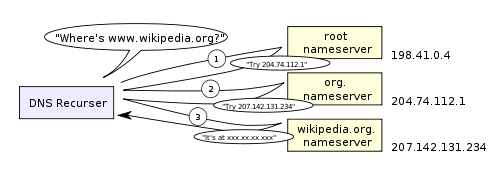

TCP-DNS
Table of Contents
1 Telephone Numbers
- Specify a device, not necessarily a person
- But to call a person, we eventually need to call a device
- How do we map between a person and their phone?
1.1 Parallels notes
- Keeping your phone number is recent, but still may need to change
- Home, cell numbers services to balance between them
- Ultimately, we get a phone number from the person
- But we can trust other people who have it to share
2 Hostnames -> IP addresses
- Just like my telephone number, we associate names like
yelp.comto a number - Association is done using Domain Name Service (DNS)
- DNS has a hierarchy for finding who can authoritatively provide an IP address, and typically has caching once the question has been answered
3 Parts of a Hostname
- Top Level Domain
- highest level in domain hierarchy:
.com.org.edu.uk.cn - Subdomain
- labels specifying the hierarchy reading from right to left
- Hostname
- domain name with an IP address
3.1 Details notes
- The first subdomain can be registered by domain registrars
- Further subdomains can be generated by domain owners (eg.
www.google.com,people.ischool.berkeley.edu - Subdomains can be arbitrary, but typically used for department (eg
ischool), service (eg.www), or area (en) comis not a hostname because it does not have an IP
4 Hostnames -> IP addresses
- To find a mapping, a client asks the TLD name server
- The nameservers will recursively direct the client to the domain authority
- Authority will return an IP address, client may optionally cache

4.1 Caching notes
- Caching can happen at many levels
- Typically your computer will ask the ISP name server
- The ISP nameserver will recursively lookup the result and cache it for the next customer
5 Example
host -v people.ischool.berkeley.edu 199.7.83.42 ;; AUTHORITY SECTION: edu. 172800 IN NS a.edu-servers.net. ;; ADDITIONAL SECTION: a.edu-servers.net. 172800 IN A 192.5.6.30 host -v people.ischool.berkeley.edu 192.5.6.30 ;; AUTHORITY SECTION: berkeley.edu. 172800 IN NS phloem.uoregon.edu. berkeley.edu. 172800 IN NS adns1.berkeley.edu. ;; ADDITIONAL SECTION: phloem.uoregon.edu. 172800 IN A 128.223.32.35 adns1.berkeley.edu. 172800 IN A 128.32.136.3 host -v people.ischool.berkeley.edu 128.32.136.3 ;; ANSWER SECTION: people.ischool.berkeley.edu. 3600 IN CNAME harbinger.ischool.berkeley.edu. harbinger.ischool.berkeley.edu. 3600 IN A 128.32.78.16
5.1 Root notes
- Root server addresses are lettered
athroughm, we'll use ICANN's - Provide
authorityinformation about who to query next - Down to DNS provider for people
6 Why Separate Names & Addresses?
- Different semantic meaning
- May want other mappings: names to street addresses
- They don't have to be the same, so keep flexibility
6.1 Tradeoffs notes
- Flexibility wins again
7 Other Mappings
- A
- IP Address (main record type)
- CNAME
- alias for another domain name
- MX
- mail transfer agents
- TXT
- meta data
7.1 Many others notes
- http://en.wikipedia.org/wiki/List_of_DNS_record_types
- TXT originally started as human notes, but has evolved to store metadata about a domain, for example encryption keys
8 Browsers
- Type in a URL with domain name (eg.
yelp.com) - Browser uses DNS to find IP address (eg.
199.255.189.60) - Connects to address on a port (eg.
80) - Sends packets of data containing
GET / HTTP/1.1
8.1 Packets notes
- Operating System typically breaks up a stream of data into packets
9 Highest selling domain names animate
- diamond.com $7.5 million
- fb.com $8.5 million
- porn.com $9.5 million
- fund.com $9.99 million
- hotels.com $11 million
- sex.com $13 million
9.1 Source notes
10 IP is Unreliable
- Best effort delivery
- No guarantees
- How do we build a reliable Web on it?
10.1 Components notes
- How to build stateful applications on stateless protocols?
- Keep state on the host
11 Transport Control Protocol
- Correctness
- prevent data corruption
- Reliability
- ensure delivery or error
- Ordering
- add sequence numbers
- Congestion
- back off
11.1 Accurate delivery notes
- How do you know if the data you receive is the same as was sent? Checksum
- How does the sender know if a packet was delivered? Ack
- How do we know the ordering of the data? Packet sequence numbering
- TCP also adds "ports": ability to connect to a particular application on the destination host
11.2 Checksum
- Take the bits in a message
- Add them up*
- Append the sum
- Example: "jim" = 106 + 105 + 109 = 320
11.3 Details notes
- Many other ways of calculating besides addition, eg xor or polynomial formulas
- Difference between checksum for errors and checksum against attackers
11.4 Ack two_col
- When a machine receives a packet, it acknowledges it
- If a machine does not receive an ack, it resends
- To keep track of messages, uses a sliding window

11.5 Window notes
- If the sender waits for every ack, things get pretty slow
- So instead we keep sending up to a certain point, but then if we don't hear anything for a while we stop and wait for ack
- Like a good phone conversation
11.6 Sequence Numbers two_col

- If we can resend, or packets can take different routes, they can be delivered in a different order
- How do we know the right order?
- Agree on a starting number, send numbered packets
- Client will keep track of packets received, deliver data in order to app
11.7 Tricks notes
- We can also use this as an optimization for acks: Send ack for all packets < current one
- Agreement = "TCP Handshake"
11.8 Three-way Handshake
- SYN
- Synchronize using a random starting number
- SYN-ACK
- Acknowledge syn packet with an ack number and its own random starting number
- ACK
- Acknowledge the SYN-ACK packet
11.9 Timeline notes
- Client sends request
- Server responds
- Client responds
11.10 Congestion
- Why are packets delayed?
- Often, it is because the system is overwhelmed
- So back off! If it is still overwhelmed, back off more!
11.11 Exponential notes
- Wait 1 second, 2 seconds, 4, 8, 16…
- Randomize wait, so not everyone tries again at the same time
- Then ramp up again: larger packets, bigger window
12 Telnet
- TCP/IP and DNS client
- Connects to a host at lower level
- Up to you to communicate with HTTP or any other protocol
- Does TCP/IP know about domains or hostnames?
12.1 No! notes
- That's why we must send
Hostheader in HTTP
13 Flexibility two_col
- TCP/IP most commonly used, but not the only ones!
- Realtime protocols (voice, video) may value timeliness over correctness

14 Composability!
- Internet is a network of networks
- IP used to send packets between two addresses
- DNS maps names to addresses
- TCP ensures reliable communication
- Web built on Internet technology
14.1 Notes notes
- Each component evolved, and we're not stuck with any one particular technology
- But all parts must be working correctly for users to get a great experience